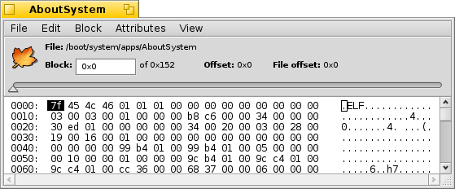
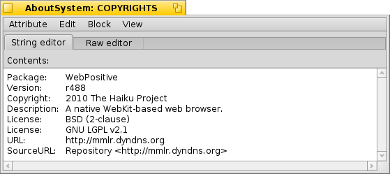

Русский
Русский Català
Català Deutsch
Deutsch English
English Español
Español Français
Français Italiano
Italiano Magyar
Magyar Polski
Polski Português
Português Português (Brazil)
Português (Brazil) Română
Română Slovenčina
Slovenčina Suomi
Suomi Svenska
Svenska 中文 ［中文］
中文 ［中文］ Українська
Українська 日本語
日本語 Редактор диска (DiskProbe)
Редактор диска (DiskProbe)
| Расположение в Deskbar: | ||
| Расположение в Tracker: | /boot/system/apps/DiskProbe | |
| Настройки хранятся по адресу: | ~/config/settings/DiskProbe_data |
DiskProbe - HEX редактор для просмотра и редактирования содержимого файла или устройства на уровне байтов, он работает на самом низком уровне и потому может серьёзно повредить данные, если не соблюдать осторожность!
При запуске DiskProbe у вас сначала спросят о файле или устройстве, с которым планируется работать. После выбора откроется следующее окно:

В основном окне всегда отображается один блок данных, размер которого может быть настроен в меню . Слева показано смещение от начала блока, в середине данные в виде HEX значений и справа то же самое в виде ASCII символов.
Вы можете перемещаться от блока к блоку с помощью верхнего ползунка или клавиш ALT+← и ALT+→ и переключаться между HEX и ASCII колонками клавишей TAB.
Пункт меню не только предоставит выбор с различным порядком байтов (в шестнадцатеричном или десятичном виде, устанавливаемом через ), он так же интерпретирует его как смещение блоков, к которым вы можете перейти. Пункт будет недоступен (затемнен), если позиция будет за пределами файла/устройства.
Эта функция удобна в основном при просмотре файловых систем, так как они часто содержат ссылки на другие блоки.
If the file you're probing includes attributes, the menu can be used to open any of them in a new DiskProbe window. Here's the SYS:PACKAGE attribute of the AboutSystem application:

В зависимости от вида атрибута откроется нужная вкладка редактора, помимо всегда присутствующей вкладки Raw редактор. Например, имеются редакторы для текста и MIME-типов, просмотрщик векторных иконок.